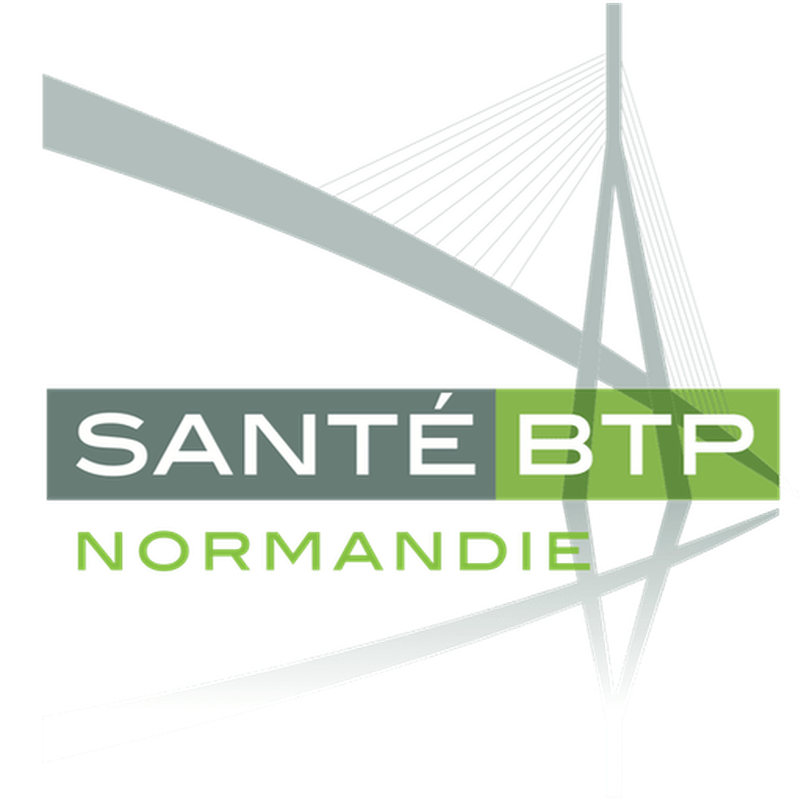

BTS SIO • Option SISR
Portfolio professionnel
Étudiant en BTS SIO SISR, passionné par les systèmes, réseaux et l'administration infrastructure. En recherche d'alternance.

BTS SIO
Je suis en option SISR (Solutions d'Infrastructure, Systèmes et Réseaux). Cette option forme à l'administration des parcs informatiques, la virtualisation, la cybersécurité et la gestion des réseaux.